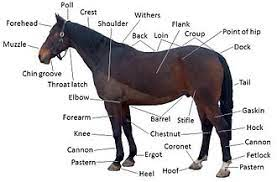

Join the Horse Haters
Do you hate horses? Dislike their long faces and short tempers? Well do we have the society for you! Here at the horse haters, our equine resentment is unbound, so if you harbour a similar hatred, join now!

